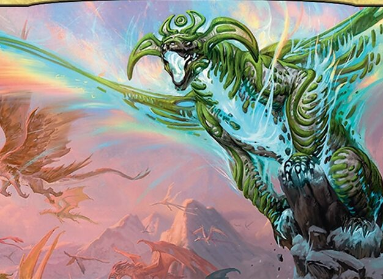

Atraxa, Praetors' Voice
Spitzenklasse
Das Deck gewinnt 33 % seiner Partien – der Schnitt am Vierertisch liegt bei 25 %.
- Stufe · Elo
- S 1677 Platz 6 von 64 in der Rangliste bis 200 €
- Siegquote
- 33 % 169 Siege in 510 Partien, mit 90 % Sicherheit zwischen 30 und 37 %
- Platzierungen
- 130 %12×
- 222 %9×
- 318 %7×
- 430 %12×
Dort ein neues Deck anlegen und die Liste beim Import einfügen.
- Preis
- 191,06 €von 200,00 €
- Partien
- 521in 52 Turnieren, 11 am Zeitlimit nicht gewertet
- Karten
- 10036 Länder, davon 12 Standard
- Game Changer
- 2höchstens 3 erlaubt
- Kombos
- 1komplett im Deck
- Regelcheck
- Bestanden100 Karten, Farben, Bannliste
Höchstens 200 € inklusive Commander. Steigen die Preise darüber, wird die Kaufliste automatisch neu gebaut.
Die Kaufliste wurde am 05.11.2026 mit aktuellen Preisen neu gebaut: Die getestete Fassung kostete inzwischen 200,81 € und lag damit über 200,00 €. Siegquote und Platzierung stammen von der getesteten Fassung.
Stärken und Schwächen
Aus 500 ausgewerteten Partien in 51 Turnieren (mit den Listen, die im Turnier gespielt wurden). Partien am Zeitlimit zählen wie in der Rangliste nicht. Werte in Klammern: Schnitt aller Decks derselben Preisklasse. Die genauen Zahlen siehst du, wenn du mit der Maus auf einen Punkt zeigst oder ihn antippst.
Spielweise: gewinnt über den Kampf – 100 % des Schadens an Gegnern ist Kampfschaden · So gewinnt es: 57 % der Siege durch Überleben – die Gegner schalteten sich gegenseitig aus (Schnitt aller Decks: 32 %)
Stärken
Keine eindeutige Stärke in den Logs.
Schwächen
- Wenig Druck deutlichnur Ø 14 Schaden an Gegnern je Partie (Schnitt aller Decks: 30) · 500 Partien
- Abhängig vom Commander Tendenzohne ihn nur 10 % Siege, mit ihm 35 % · 30 Partien ohne, 470 mit Commander
- Anfällig für direkten Schaden deutlichnur 45 % der Niederlagen durch Kampf, der Rest durch Zauber, Entzug oder Fähigkeiten (Schnitt aller Decks: 61 % Kampf) · 149 von 334 Niederlagen
- Lässt viel Mana liegen deutlich31 % der Länder wurden in einem Zug nicht genutzt (Schnitt aller Decks: 24 %) – meist war die Hand leer oder die Karten passten nicht · gemessen in den eigenen Zügen 3–8, 180 Partien
Gegen wen es gewinnt
Siegquote an Tischen, an denen dieser Commander mitspielte – nur Gegner aus der aktuellen Rangliste mit mindestens 20 gemeinsamen Partien. Am Vierertisch liegt der Schnitt bei 25 %.
Gewinnt oft gegen
 58 %von 26
58 %von 26 55 %von 22
55 %von 22 48 %von 33
48 %von 33
Tut sich schwer gegen
 14 %von 22
14 %von 22
15 %von 47 15 %von 20
15 %von 20
Spielstil
Infect+1/+1 CountersPlaneswalkers
Anzahl Karten je Aufgabe – Ø ist der Schnitt unserer Ranglisten-Decks (Strich im Balken). Der Reiter „Aufbau“ vergleicht stattdessen mit dem EDHREC-Durchschnittsdeck dieses Commanders.
Mit einem anderen Commander vergleichen
Commander (1)
- Atraxa, Praetors' Voice17,48 €
Kreaturen (23)
- Dreamtide Whale3,61 €
- Skrelv, Defector Mite Schutz3,32 €
- Birds of Paradise B Ramp3,00 €
- Bloated Contaminator2,72 €
- Venerated Rotpriest2,67 €
- Evolution Sage2,24 €
- Tekuthal, Inquiry Dominus2,15 €
- Flux Channeler2,08 €
- Blighted Agent1,40 €
- Ichor Rats1,26 €
- Ixhel, Scion of Atraxa1,23 €
- Shalai, Voice of Plenty Schutz1,12 €
- Ezuri, Stalker of Spheres Kartenziehen0,44 €
- Deepglow Skate0,42 €
- Fathom Mage Kartenziehen0,29 €
- Plague Stinger0,24 €
- Cankerbloom InteraktionKI schwach0,23 €
- Carth the LionKombo0,23 €
- Voidwing Hybrid0,22 €
- Tainted Observer0,20 €
- Metastatic Evangel0,17 €
- Thrummingbird0,12 €
- Blightbelly Rat0,08 €
Planeswalker (4)
- Vraska, Betrayal's Sting Ramp4,33 €
- Tamiyo, Field Researcher Kartenziehen1,45 €
- Teferi, Temporal ArchmageKombo1,11 €
- Narset, Parter of VeilsGame Changer0,69 €
Spontanzauber (12)
- Ripples of Potential Schutz4,60 €
- Assassin's Trophy B Interaktion1,20 €
- Swords to Plowshares B Interaktion1,17 €
- Counterspell B Interaktion1,11 €
- Path to Exile B Interaktion0,94 €
- Prologue to Phyresis0,54 €
- Infectious Bite Interaktion0,40 €
- Serum Snare Interaktion0,33 €
- Inspiring Call KartenziehenKI schwach0,31 €
- Vraska's Fall Interaktion0,24 €
- Reject Imperfection InteraktionKI kann nicht0,20 €
- Experimental Augury0,18 €
Hexereien (12)
- Three Visits B Ramp4,88 €
- Farewell S Board WipeGame Changer4,00 €
- Nature's Lore A Ramp2,22 €
- Farseek B RampKI schwach0,69 €
- Drown in Ichor Interaktion0,66 €
- Unnatural Restoration0,54 €
- Contentious Plan0,32 €
- Cultivate B Ramp0,28 €
- White Sun's Twilight Board Wipe0,25 €
- Infectious Inquiry Kartenziehen0,23 €
- Rampant Growth B Ramp0,12 €
- Tezzeret's Gambit Kartenziehen0,12 €
Artefakte (9)
- The Chain VeilKomboKI kann nicht11,63 €
- Lightning Greaves A Schutz3,18 €
- Sol Ring B Ramp0,75 €
- Fellwar Stone A Ramp0,69 €
- Replicating Ring Ramp0,45 €
- Chromatic Lantern C Ramp0,42 €
- Arcane Signet B Ramp0,37 €
- Astral Cornucopia Ramp0,22 €
- Everflowing Chalice Ramp0,18 €
Verzauberungen (3)
- Phyrexian Arena Kartenziehen3,49 €
- Brokers Ascendancy1,73 €
- Inexorable Tide1,12 €
Länder (36)
- Flooded Strand15,22 €
- Windswept Heath10,52 €
- Watery Grave7,64 €
- Godless Shrine7,25 €
- Overgrown Tomb6,86 €
- Hallowed Fountain6,81 €
- Breeding Pool6,76 €
- Temple Garden5,93 €
- Undergrowth Stadium4,96 €
- Reflecting Pool4,81 €
- Rejuvenating Springs3,86 €
- Karn's Bastion2,54 €
- Reliquary Tower1,53 €
- The Seedcore0,40 €
- Rogue's Passage0,25 €
- Seaside Citadel0,23 €
- Sunken Hollow0,23 €
- Exotic Orchard0,20 €
- Sandsteppe Citadel0,18 €
- Command Tower0,16 €
- Opulent Palace0,15 €
- Prairie Stream0,15 €
- Path of Ancestry0,12 €
- Evolving Wilds0,04 €
- 3× Swamp
- 3× Forest
- 4× Island
- 2× Plains
Upgrade auf bis 300 €
Du hast dieses Deck bis 200 €? Das getestete Deck bis 300 € spielt diese Karten anders – oben die, mit denen es am häufigsten gewinnt.
14 Karten anders · +101,06 € · Platz 6 → Platz 15
- Branching Evolution +17 % Siege, wenn gespielt6,52 €
- Magistrate's Scepter +16 % Siege, wenn gespielt3,01 €
- Simic Ascendancy +12 % Siege, wenn gespielt0,67 €
- Innkeeper's Talent +7 % Siege, wenn gespielt8,49 €
- Hardened Scales +5 % Siege, wenn gespielt1,84 €
- Winding Constrictor +5 % Siege, wenn gespielt0,31 €
- Vorinclex, Monstrous Raider +4 % Siege, wenn gespielt36,91 €
- Contagion Engine +4 % Siege, wenn gespielt9,84 €
- Norn's Decree +3 % Siege, wenn gespielt8,22 €
- Doubling Season +3 % Siege, wenn gespielt20,45 €
- Crystalline Crawler0,26 €
- Corpsejack Menace0,23 €
… und 2 weitere – alle stehen in der Liste zum Kopieren.
Dafür raus (14)
Blightbelly Rat, Carth the Lion, Ixhel, Scion of Atraxa, Narset, Parter of Veils, Phyrexian Arena, Plague Stinger, Prairie Stream, Reject Imperfection, Rogue's Passage, Serum Snare, Tainted Observer, Teferi, Temporal Archmage, The Chain Veil, Voidwing Hybrid
Starthand ziehen
Sieben zufällige Karten aus diesem Deck – so siehst du, wie sich der Start anfühlt. Der Commander liegt wie im Spiel nicht im Stapel.
Kombos im Deck (1)
Laut Commander Spellbook mit dieser Kartenliste möglich. Was eine Kombo genau braucht, steht dort. Ob eine Kombo in Partien wirklich zusammenkam, steht im Reiter „Partien“.
- Teferi, Temporal Archmage + The Chain Veil + … → ∞ Kartenziehen, ∞ farbiges Mana, ∞ farbloses Mana
2 Fassungen, dazu passt jeweils eine von: Carth the Lion
Commander Spellbook führt 2 Einträge, weil jede Fassung einzeln zählt (zum Beispiel mit einem anderen Opfer-Ziel). Hier zählt jede Kombo einmal.
Alle 2 Einträge anzeigen
- Teferi, Temporal Archmage + The Chain Veil → ∞ Kartenziehen, ∞ farbiges Mana, ∞ farbloses Mana
- Teferi, Temporal Archmage + The Chain Veil + Carth the Lion → ∞ Kartenziehen, ∞ farbiges Mana, ∞ farbloses Mana
Die Partien in Zahlen
- Commander gewirkt
- 100 %der Partien, in 27 % bis zum 4. Zug
- Schaden je Partie
- 14Schnitt: 30
- Siege im Schnitt
- Zug 11,5eigener Zug, Schnitt: 11,9
- Als Erstes ausgeschieden
- 23 %116 von 500 Partien, Schnitt: 25 %
- Zu wenig Länder
- 11 %der Partien, davon 8 gewonnen, Schnitt: 9 %
- Mulligans
- 5 %24 in 500 Partien, Schnitt: 7 %
Karten mit messbarem Einfluss
Ein Zusammenhang, kein Beweis: Diese Karten kamen in Siegen deutlich öfter ins Spiel.
- Vraska's Fall – gewonnen in 52 % der Partien, in denen sie gewirkt wurde (115), sonst 28 %
- Prologue to Phyresis – gewonnen in 52 % der Partien, in denen sie gewirkt wurde (96), sonst 29 %
- Ichor Rats – gewonnen in 60 % der Partien, in denen sie gewirkt wurde (52), sonst 30 %
Was die Partien zeigen
Aus 500 ausgewerteten Partien in 51 Turnieren (mit den Listen, die im Turnier gespielt wurden). Partien am Zeitlimit zählen wie in der Rangliste nicht. Werte in Klammern: Schnitt aller Decks derselben Preisklasse. „deutlich“: klar belegt. „Tendenz“: zeichnet sich ab, ist aber noch nicht sicher.
Forge-KI-Hinweis: Dieses Deck gewinnt auffällig oft, indem es überlebt. Die Forge-KI greift Spieler mit viel Leben selten an und entfernt Siegkarten kaum – am echten Tisch, wo Menschen das Deck früher angreifen, ist es vermutlich schwächer als hier gemessen. Mehr dazu
Schaden pro Partie alle Partien
Schaden an Gegnern pro Partie, gerechnet über alle 500 Partien – was die Karte insgesamt beiträgt
- Atraxa, Praetors' Voice Ø 7,8traf in 327 von 500 Partien
- Shalai, Voice of Plenty Ø 0,9traf in 44 von 500 Partien
- Dreamtide Whale Ø 0,9traf in 35 von 500 Partien
Schaden bei Einsatz wenn sie trifft
Gesamtschaden ÷ Partien, in denen die Karte Schaden gemacht hat – ihre Stärke im Einsatz
- Dreamtide Whale Ø 12,5traf in 35 von 500 Partien
- Atraxa, Praetors' Voice Ø 12,0traf in 327 von 500 Partien
- Bloated Contaminator Ø 10,3traf in 27 von 500 Partien
Top-Finisher schaltet Gegner aus
Karten, die am häufigsten einen gegnerischen Commander aus der Partie genommen haben
- Atraxa, Praetors' Voice 55×500 Partien im Deck
- Karn's Bastion 23×500 Partien im Deck
- Contagion Engine 19×269 Partien im Deck
Beste Interaktion räumt auf
Gegnerkarten, die beim Auflösen dieser Karte zerstört, verbannt, zurückgeschickt oder neutralisiert wurden (ohne Spielsteine)
- Farewell 657×Ø 1,3 pro Partie · 500 Partien im Deck
- Supreme Verdict 235×Ø 0,8 pro Partie · 281 Partien im Deck
- Vraska's Fall 193×Ø 0,4 pro Partie · 500 Partien im Deck
Größte Hindernisse blockt am meisten
Gegnerische Karten, die die Angreifer dieses Decks am häufigsten geblockt haben – insgesamt 13 % der 2515 Angreifer geblockt, davon 28 % durch Flieger oder Reichweite
- Zombie Druid Token 7×blockte in 3 Partien
- Teval, the Balanced Scale 6×blockte in 6 Partien
- Wizard Token 6×blockte in 5 Partien
Selten gewirkt Kandidaten zum Tauschen
Karten dieser Liste, die in ihren Partien am seltensten gewirkt wurden – oft zu teuer oder zu langsam (Länder ausgenommen)
- Infectious Bite 0 %gewirkt in 1 von 500 Partien
- Drown in Ichor 2 %gewirkt in 11 von 500 Partien
- Serum Snare 3 %gewirkt in 11 von 370 Partien
Siege nach Zug Tempo
In welchem eigenen Zug die 166 Siege kamen
- bis Zug 75 %
- Zug 8–914 %
- Zug 10–1137 %
- Zug 12–1325 %
- ab Zug 1419 %
Kombos im Spiel deutlich Teferi, Temporal Archmage + The Chain Veil: alle Teile gewirkt in 0 Partien, davon 0 gewonnen · Teferi, Temporal Archmage + The Chain Veil + Carth the Lion: alle Teile gewirkt in 0 Partien, davon 0 gewonnen
Elo-Verlauf
Elo nach jedem Turnier, älteste links. Gestrichelt: Stufengrenzen S, A, B, C.
Jetzt 1677, am höchsten 1706 (21.11.), am niedrigsten 1498 – aus 52 Turnieren.
Letzte Partien
Platz in jeder Partie zu viert, älteste links: Gold = Sieg, Silber = 2, Bronze = 3, rot = 4, Ring = Remis.
2211244144141431121313223244332444141123In den letzten 40 Partien 12× Sieg, 9× Platz 2, 7× Platz 3 und 12× Platz 4.
Manakurve ohne Länder
Durchschnitt 2,67
Aufgaben im Deck
Anzahl / Richtwert aus dem EDHREC-Durchschnittsdeck (der Strich), rot heißt deutlich darunter. Strategie: die übrigen Karten ohne eine dieser Aufgaben, etwa die Kreaturen und Effekte, um die sich das Deck dreht. Zusammen 63 Karten ohne Länder.
Kartentypen
- Kreaturen23
- Planeswalker4
- Spontanzauber12
- Hexereien12
- Artefakte9
- Verzauberungen3
- Länder36
Teuerste Karten
Was das Programm gelernt hat
In jedem Turnier testet das Deck eine Karte. Ein Urteil gibt es erst ab 40 Partien mit und ohne die Karte. Weil das Deck jedes Turnier mit aktuellen Preisen und Daten neu gebaut wird, können getestete Karten später wieder herausfallen.
- kein klarer Unterschied Dovin's Veto statt Anguished Unmaking · Siegquote 38 % mit, 33 % ohne (40 / 470 Partien) · aus einer früheren Fassung, heute nicht im Deck
- kein klarer Unterschied Myr Convert statt Replicating Ring · Siegquote 35 % mit, 30 % ohne (340 / 170 Partien)
- kein klarer Unterschied Ajani, Sleeper Agent statt Ixhel, Scion of Atraxa · Siegquote 30 % mit, 33 % ohne (50 / 460 Partien)
- kein klarer Unterschied Anguished Unmaking statt An Offer You Can't Refuse · Siegquote 32 % mit, 34 % ohne (191 / 319 Partien) · aus einer früheren Fassung, heute nicht im Deck
- kein klarer Unterschied Tainted Observer statt Narset, Parter of Veils · Siegquote 32 % mit, 34 % ohne (230 / 280 Partien)
- kein klarer Unterschied Vishgraz, the Doomhive statt Thirsting Roots · Siegquote 32 % mit, 33 % ohne (60 / 450 Partien) · aus einer früheren Fassung, heute nicht im Deck
- kein klarer Unterschied Contagion Clasp statt Plague Stinger · Siegquote 34 % mit, 33 % ohne (90 / 420 Partien)
- kein klarer Unterschied Plague Stinger statt Voidwing Hybrid · Siegquote 32 % mit, 34 % ohne (197 / 313 Partien)
5 weitere getestete Karten sammeln noch Partien.
Kaufliste für Cardmarket
Liste kopieren, auf Cardmarket unter „Wants“ eine neue Liste anlegen und einfügen.
Zusammen 191,06 € Cardmarket-Durchschnitt vom 28.11.2026
Cardmarket Wants öffnenPreise ohne Versand. Einzelne Karten können bei Cardmarket inzwischen teurer oder günstiger sein.
Gespielt von der Forge-KI, zu viert. Ein durchschnittliches Deck gewinnt 25 %. Wie wird getestet?